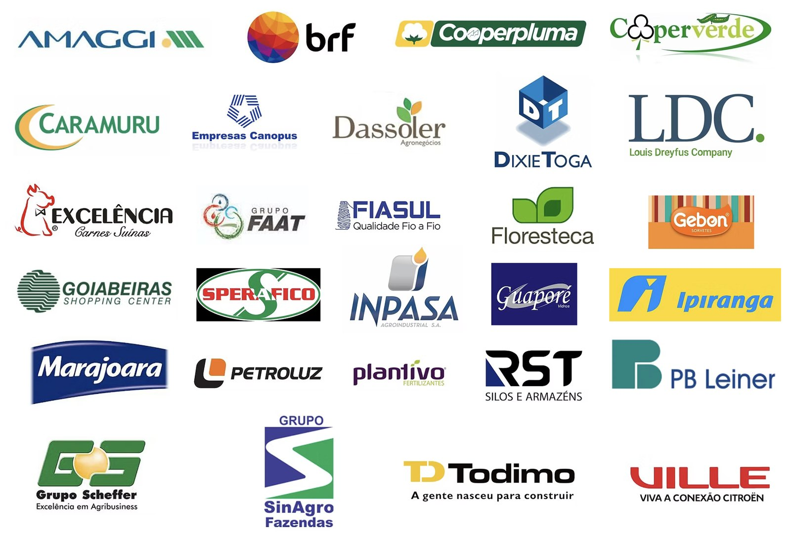

Consultoria em incentivos, projetos e crédito · Cuiabá/MT
Planejamento tributário, estudos de viabilidade e captação de recursos para empresas que investem nas Regiões Centro-Oeste e Norte.
Experiência em planejamento, projetos e captação de recursos.
Oportunidades para MT
Clientes

Análise inicial do projeto, com o caminho de incentivos, estudos e crédito aplicável a cada investimento.
Falar no WhatsApp